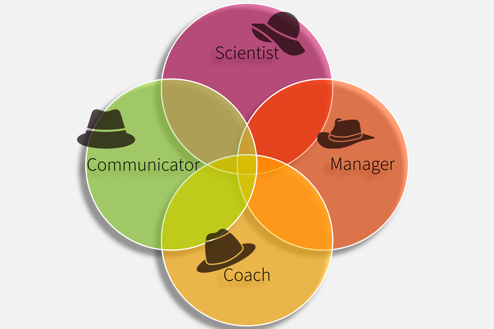

systemfonts and textshaping have been compiled with different versions of Freetype. Because of this, textshaping will not use the font cache provided by systemfonts
This chapter is relevant for students in my course. If you are not currently enrolled, you can skip this chapter and directly jump to the chapter on the training process ?sec-2-trainingprocess.
As students attending this course, you already have a basic understanding of sports science, biomechanics, physiology, sports physiology, sports psychology, and related fields. The goal of this course is to translate the theoretical knowledge already acquired into practical applications. Following the curriculum, by the end of the course, you should be able to …
…. plan, conduct, evaluate, and reflect on training sessions as the smallest part of a training process.
… creating a training plan, structuring the load parameters goal-oriented, and managing and adjusting the training.
… guide and facilitate self- and external reflection in order to continuously improve the entire training work, its progress, and documentation.
4 My Goals
As a teacher, I want to create an open space for discussions, allowing us to consider diverse opinions and approaches. Many of you already bring experience and expertise in a specific area of training and movement. You have experience as athletes, coaches, or in other roles within sports- and movement-related areas. This expertise has proven to be very helpful for fellow students in past semesters and creates opportunities for exchange and collaborative learning. I hope to create a diverse course for you to deepen your understanding of training, establish an area of experience and gain new practical insights. The content is based on my readings of current scientific discussions and is expanded and complemented by personal experiences and best-practice examples.
5 Tracking Progress
An important part of a successful training process is continuous monitoring and adjustment of the training. Similarly, I try to control and evaluate the learning process. For this, I rely on a similar multi-stage control system with testing and monitoring.
Informally, I rely on your feedback in addition to my own documentation and reflection.
To assess knowledge transfer, I use quizzes both during and after the sessions.
There are also so-called check-out tasks on the learning platform Moodle. These consist of short reflections. Unlike the quizzes, they rely less on pure knowledge (recall) and instead support understanding and analyzing the concepts. Additionally, the content is placed in the context of your own experience.
An acute monitoring system (Figure 5.1) is being introduced to track your self-assessment. This is created in line with typical monitoring tools, assessing readiness and fatigue before, during, and after a training session. The goal during training is to provide real-time adjustments to the load. Similarly, the monitoring will help me adjust my teaching to your needs as a student.
A teach-back session also offers the opportunity for a control system: in this session, you take on the role of teacher and share your own skills and experiences with your colleagues.
An evaluation is conducted each semester using the official evaluation form of the institute and the University of Vienna to allow for anonymous feedback from you.
Every student receives a Unique Identifier (LVID) during the course, which is a random four-digit number. This should be used when conducting pseudonymized evaluations, filling out monitoring, and for some assignments. This strategy helps me to gain an unbiased view of the performance and your feedback.
6 Organizational Directives
Several rules are proposed at the beginning of the course. These are to be reviewed by you and can be challenged until the third session. A change to the rule can be proposed in the plenary and voted on together. The current rule proposals are as follows:
6.1 Open discussion
I want to establish an atmosphere for discussion where all opinions are welcome. This means that not only I, but also students who speak up, will be given attention, and the opinions and questions of everyone will be taken seriously. We will, however, strictly stick to discussions related to the immediate topic. The open discussion also includes the assessment criteria and partial performances. These can also be objected to until the third session.
6.2 Attendance rate
The minimum attendance requirement is set at 75% of the sessions. A session is considered fully attended if the student is no more than 15 minutes late. If the 15-minute limit is exceeded, half of the attendance will be deducted. Repeated unjustified late arrivals of less than 15 minutes may result in a deduction of points from the participation grade. This is to ensure a smooth process. Being on time for the course not only supports you but also helps your colleagues engage with the content independently.
6.3 Independent Performance
6.3.1 Plagiarism
Independent performance is a key criterion of the course. Plagiarism is, therefore, strictly penalized. According to legal standards, plagiarism is the intentional adoption of content without citing the source (see guidelines Univie, 2026). Since plagiarism can also occur unintentionally, the first submission of a plagiarized work results in a warning. However, continued violations will result in a reduction in points; partial performance will then be graded with as few as 0 points.
6.4 Use of Artificial Intelligence
The regulation of independent student performance also extends to non-biological entities, especially large language models (LLMs1). Of course, the use of AI can be a great support in developing content or analyzing datasets. However, it also carries the risk of negatively affecting learning experience, creativity, and the ability to find one’s own solutions.
Strictly ensure that the data we are using is only fed in anonymized! Our course material is already a tweaked version of the original data. However, the moment you are working with real athletes 2 it is one of your highest priorities to securely handle their data! That is what we aim for during the course. In cases of obvious neglect and misuse of AI, there will be significant point deductions. A typical sign of AI misuse is citing hallucinated studies. Results from evaluations can also contain errors. If AI use is not disclosed fully, a deduction of up to 20 points will be applied. When non-anonymized data is given to the models, up to 40 points will be deducted, making it difficult to pass.
The road to hell is paved with good AI models
6.5 How to use AI for this course
Realistically, I cannot control how much you use AI for course assignments. However, I would like to suggest a targeted use! AI should support your thinking and learning rather than replace them.
The foundation of AI-supported work is what I call the 1-2-3 Rule: Give each task at least 1 hour of your own unsupported thinking, spread out over at least 2 different days. After that, it’s helpful to get feedback, and AI can provide valuable support. When doing so, use at least 3 chained prompts for re-evaluating inputs and outputs.
Tip1-2-3 rule of AI use for learning and thinking
One hour on two days with three prompts — this heuristic should guide you when using AI during learning.
6.5.1 Additional tips for using AI:
Research: When you are new to a topic, it can sometimes be difficult to find the right studies because you are not yet familiar with the technical terms. Of course, just reading a lot may help in the long run. However, AI can provide an overview of the most important terms and concepts to get started. AI can also improve search strings and help you become familiar with major databases like PubMed and Web of Science. AI can also help you find studies and summarize the content. But this is tricky! Currently, we lecturers see a lot of hallucinated information in submitted students’ texts. If you use AI to find and comprehend information, always double-check the original source thoroughly! You will be surprised how often AI confidently gives you information that is actually false. The models will improve over time, and maybe in a few years, they will be better than any expert in providing information. But we are not there, yet - and it is not certain that we will get there!
Devil’s Advocacy: Most common standard AI models tend to agree with you even when you’re wrong. They often reinforce our preconceptions. Additionally, we are inclined to believe them because of their eloquent wording, convincing tone, and (sometimes random or hallucinated) sources—especially when they reinforce our assumptions. . Instead, give the AI the task of criticizing your work and identifying weaknesses. It gives a pretty good sparring partner if it knows what you want from it. Explain something you may think you know, or prompt your ideas on a training process, and ask it to tell you where you are wrong or what concepts you missed. (Remember, you can also be your own devil’s advocate before letting the AI do it #1-2-3rule.)
Data management: If you want to edit data or display it in a chart, AI naturally offers a way to support you. However, instead of directly entering the data and letting AI create the chart, it is advisable to request a code block in R or Python or a step-by-step guide for Excel. Let it explain each step so you understand the intention and the technicalities. This way, you don’t have to reveal your data, and you also avoid the risk of the AI distorting the data points or calculating something incorrectly, even if it ‘knows’ the correct method.
Language curation: If you use AI to improve language, grammar, and spelling, it is always advisable to list the proposed changes. If you use Word (or a similar software), you can use comparison mode to see the curation side by side with the original version. This text is heavily curated with AI (u:AI and Grammarly). But I frequently encounter mistakes or misrepresentations of my entered text. So stay vigilant on that front too.
Further Information: You can also find some information on AI on the university’s website (Checklist Univie, 2026)
6.6 Arbeitsaufwand
The course is listed with 2 ECTS credits. This should correspond to a workload of 50-60 hours for the average student (ECTS Univie, 2026). The attendance time is approximately 22 hours, so you can expect an additional workload of 30 hours. Spread over the semester, this amounts to roughly 1 hour and 45 minutes per week. Since the assigned workload is based solely on my estimate, I ask that you track your actual effort. Complete tracking will be rewarded with extra points and will help improve the course’s quality.
6.7 Assessment Criteria and Grading
The grading follows the institute’s usual standards (Table 6.1). The partial performances consist of main components (monitoring, training documentation, journal club, teach-back, data processing) and bonus components (round table, workload tracking).
I strive for a fair assessment. Individual solutions for performance delivery are possible, but should be discussed with me early on. Please contact me as soon as possible if you need any adjustments.
Participation is primarily assessed through quizzes during class, as well as two quizzes to be completed at home. Additionally, the check-outs on Moodle are taken into account.
Training Documentation: You should keep your own training journal and monitor your training throughout the semester. Later in the semester, you will draw conclusions from it and create a training plan fitting your personal needs. The minimum requirement is a training diary covering at least 8 weeks, including all load parameters and using an additional monitoring tool (see later chapters). I think it is a good practice to document and evaluate one’s own training process.
Journal Club: Two sessions will be dedicated to reading and interpreting training-related articles. Continuous education through understanding scientific evidence is essential. We must assume that learned knowledge quickly becomes outdated. Therefore, adapting your own actions based on new evidence is unavoidable for a professional sports scientist. I will provide you with an article in each session. After discussing some general reading strategies and how to organize acquired knowledge, you will read the articles by yourself, following the outlined structure. Afterwards, we will discuss the topic and try to identify actionable strategies from the information.
Teach-Back: In this session, you take on the role of the teacher and present a topic you have prepared. This provides an opportunity to incorporate your own areas of expertise. Each presentation should last about 10 minutes and will be held in front of an audience of 4-5 other students. The assessment is provided through peer review within your small group. This is really an opportunity to strengthen your own understanding of what you think matters most. You can also think of it Richard-Feynman-Style who has said on different occasions that you only really understand it when you can explain it in simple terms.
Data Processing: During the course, you will work with training and test data. Sometimes we do that in class, sometimes there is an at-home exercise. The goal is to act as a trainer and answer specific practical questions by analyzing the data. You will need a laptop or tablet for this. We use Google Sheets because it works well across systems, it’s easy to distribute data, and it is free to use. If you have some experience with Excel, R, Python, or any other program/language, feel free to transition. Submissions are evaluated as reports or specific questions that will be given to you with the dataset.
Bonus 1 - Roundtable: A live in-person event featuring external experts from science and practice is held each semester. In the 2026S semester, we will focus on field sports in light of the upcoming FIFA World Cup. All students are invited to participate and will receive 10 extra credit points.
Bonus 2 - Tracking Workload: I created this bonus assignment to better understand how much work students need to put into the material to progress through the course. To get 5 extra points, submit a table listing all tasks you have performed for this seminar, including the times. It must be in a format I can easily edit and analyse (.csv, .txt, .xlsx).
The course follows a schedule that can be adjusted to meet the students’ needs in each semester. We typically start with monitoring and a general theoretical block. At the beginning, the seminar will be held mostly as a lecture, but we will gradually move towards more active student engagement. We work our way through all phases of the training process. I will always try to reserve at least one session for Q&A or for special topics requested by the students.
Introduction to the coures; organisation; assignments;
2
Monitoring 1
Lecture/Discussion
-
Students are instructed in the basics of monitoring and then begin documenting their training.
3
Theory of Training processes
Lecture/Discussion & Sports-Analysis
Laptop/Tablet (+ Google Sheets)
Theoretical background; Exercise in analyzing an athletic event or sports
4
Testing 1
Lecture/Discussion
-
Test theory; reliability and validity;
5
Testing 2
Data management
Laptop/Tablet (+ Google Sheets)
Edit and analyze simple data of a testing battery
6
Data management
Home based session
Laptop, Internet, sound,
Assignment based on a datasset and training-relevant decision making
7
Teach back
Presentations by students
Material to present, wirting material
Students prepare a topic and present it in groups of 4-5 people (10 minutes) with subsequent discussion and evaluation by peers
8
Monitoring 2
Lecture/Discussion
Pen and paper
Further monitoring strategies for strength and conditioning
9
Journal Club 1
reading and discussion
pen and paper, Laptop or tablet
Reading strategies are presented. Students read a study and discuss afterward; multiple-choice questions are answered.
10
Journal Club 2
reading and discussion
pen and paper, Laptop or tablet
Reading a study and discussion in small groups; implementation of the content in the training process
11
Practical examples
home based video lecture with examples and questions
Laptop/Tablet (+ Google sheets)
Real and simulated data are presented, and 'puzzles' are solved.
12
Applications
your own training data
Laptop/Tablet (+ Google sheets)
Students analyze their own dataset
13
Applications
your own training data
Laptop/Tablet (+ Google sheets)
Students analyze their own dataset and plan next steps in their training process
14
Planing
reading and discussion
Laptop/Tablet; eigene Trainingsdaten
Exercise goal setting and fine-tune a training plan based on individual needs
15
Additional session
Q&A or student's chosen topic
-
-
Please note that some sessions will not take place in person but will be delivered as video lectures or data processing for at-home study.
7 The Philosophy behind the Course
The course is grounded in my understanding of the Sport and Human Movement Scientist as aGeneralist. When you finish your undergraduate education, you have a multidimensional set of skills. Working in the field of exercise and sports training, this can be a huge asset! You should be capable of taking on multiple roles or wearing different hats:
At times, you are a scientist who collects and evaluates data or reads, interprets, and implements new research findings. You also become a manager when you set goals with your athletes, plan forward, and evaluate. By wearing the coach’s hat, you support the individual development of athletes, helping them build self-efficacy and competencies both within and beyond their sports environment. As a communicator, you convey the right information to the right person at the right time. You find the proper language to transport meaning and present data to the relevant stakeholders. Teaming up with athletes to support their training process as art and science. It needs an understanding of physiology, anatomy, training science, biomechanics, and psychology, combined with a willingness to reflect and learn with and from your athletes. You will find your interpersonal skills most valuable when you serve as the link between the expectations of different stakeholders, whether they are the individual athlete, the team, parents, partners, the manager, or the medical staff. You will learn to navigate all the different perspectives and build on your professional skills as a competent all-arounder.

Figure 7.1: The hats of the training scientist - Venn diagram
Throughout the text I will refere to athletes. However, all basic principles of the training process could be relevant for working with patients or the general population. Just think about it the way Bill Bowerman framed it: “if you have a body, you are an athlete.” (I couldn’t find the original source of this quote; however, Bowerman seems to be referenced most often)↩︎